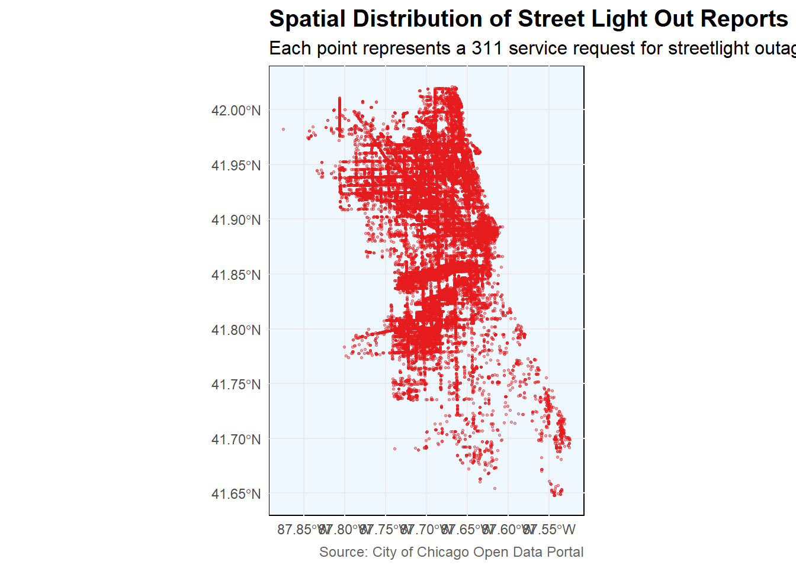
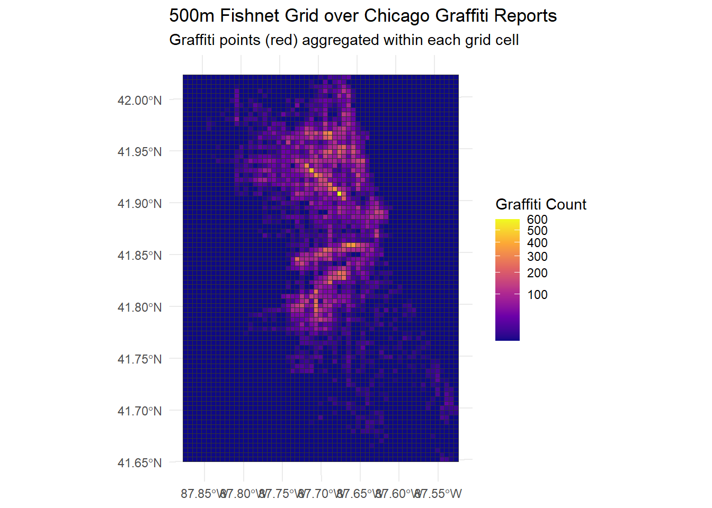

Graffiti is one of the most common urban maintenance issues in Chicago. In this step, I downloaded the 311 Graffiti Removal service request data from the City of Chicago Data Portal.
Code
# Step 1: Load and Prepare Datalibrary(tidyverse)
── Attaching core tidyverse packages ──────────────────────── tidyverse 2.0.0 ──
✔ dplyr 1.1.4 ✔ readr 2.1.5
✔ forcats 1.0.0 ✔ stringr 1.5.2
✔ ggplot2 4.0.0 ✔ tibble 3.3.0
✔ lubridate 1.9.4 ✔ tidyr 1.3.1
✔ purrr 1.1.0
── Conflicts ────────────────────────────────────────── tidyverse_conflicts() ──
✖ dplyr::filter() masks stats::filter()
✖ dplyr::lag() masks stats::lag()
ℹ Use the conflicted package (<http://conflicted.r-lib.org/>) to force all conflicts to become errors
Code
library(sf)
Linking to GEOS 3.13.1, GDAL 3.11.0, PROJ 9.6.0; sf_use_s2() is TRUE
Code
library(jsonlite)
Attaching package: 'jsonlite'
The following object is masked from 'package:purrr':
flatten
Code
library(lubridate)# Load Graffiti Removal 311 data from Chicago Open Data APIurl <-"https://data.cityofchicago.org/resource/hec5-y4x5.json?$limit=50000"data_raw <-fromJSON(url)
library(ggplot2)library(sf)library(dplyr)ggplot() +geom_sf(data = data_sf, aes(), color ="#e41a1c", alpha =0.4, size =0.6) +labs(title ="Spatial Distribution of Street Light Out Reports (Chicago)",subtitle ="Each point represents a 311 service request for streetlight outage",caption ="Source: City of Chicago Open Data Portal" ) +theme_minimal() +theme(plot.title =element_text(size =15, face ="bold"),plot.subtitle =element_text(size =12),plot.caption =element_text(size =9, color ="gray40"),panel.background =element_rect(fill ="aliceblue") )

Step 2: Fishnet Grid Creation
In this step, I created a 500-meter fishnet grid across the City of Chicago to aggregate the Graffiti Removal 311 requests. By counting how many graffiti reports fall into each grid cell, we can visualize where graffiti problems are concentrated and prepare the data for spatial regression analysis.
# Visualize the fishnet grid outlineggplot() +geom_sf(data = fishnet, fill =NA, color ="grey40", size =0.2) +geom_sf(data = data_sf, color ="red", size =0.5, alpha =0.6) +labs(title ="500m Fishnet Grid over Chicago Graffiti Reports",subtitle ="Each square represents a 500m x 500m cell",caption ="Data source: Chicago Open Data Portal" ) +theme_minimal()
Code
st_crs(fishnet) <-st_crs(data_proj)fishnet_counts <-st_join(fishnet, data_proj, join = st_contains)# Count number of graffiti incidents per grid cellfishnet_summary <- fishnet_counts %>%st_drop_geometry() %>%group_by(grid_id) %>%summarise(graffiti_count =n()) %>%right_join(fishnet, by ="grid_id") %>%st_as_sf()
Code
ggplot() +geom_sf(data = fishnet_summary, aes(fill = graffiti_count), color ="grey20") +scale_fill_viridis_c(option ="plasma", trans ="sqrt") +labs(title ="500m Fishnet Grid over Chicago Graffiti Reports",subtitle ="Graffiti points (red) aggregated within each grid cell",fill ="Graffiti Count" ) +theme_minimal()

Code
library(spdep)
Loading required package: spData
To access larger datasets in this package, install the spDataLarge
package with: `install.packages('spDataLarge',
repos='https://nowosad.github.io/drat/', type='source')`
In this step, I built statistical models to predict the number of graffiti removal requests per grid cell, and applied Poisson regression and Negative Binomial regression, which are designed for modeling count data. By comparing model fit using the Akaike Information Criterion (AIC), we can determine which model better captures the spatial variability of graffiti incidents.
Code
library(MASS)
Attaching package: 'MASS'
The following object is masked from 'package:dplyr':
select
Warning: glm.fit: algorithm did not converge
Warning: glm.fit: algorithm did not converge
Warning: glm.fit: algorithm did not converge
Warning: glm.fit: algorithm did not converge
Warning: glm.fit: algorithm did not converge
Warning: glm.fit: algorithm did not converge
Warning: glm.fit: algorithm did not converge
Warning: glm.fit: algorithm did not converge
Warning: glm.fit: algorithm did not converge
Warning: glm.fit: algorithm did not converge
Warning: glm.fit: algorithm did not converge
Warning: glm.fit: algorithm did not converge
Warning: glm.fit: algorithm did not converge
Warning: glm.fit: algorithm did not converge
Warning: glm.fit: algorithm did not converge
Warning: glm.fit: algorithm did not converge
Warning: glm.fit: algorithm did not converge
Warning: glm.fit: algorithm did not converge
Warning: glm.fit: algorithm did not converge
Warning: glm.fit: algorithm did not converge
Warning: glm.fit: algorithm did not converge
Warning: glm.fit: algorithm did not converge
Warning: glm.fit: algorithm did not converge
Warning: glm.fit: algorithm did not converge
Warning: glm.fit: algorithm did not converge
Warning in glm.nb(graffiti_count ~ neighbor_mean + local_I, data =
data_sf_grid): alternation limit reached
data_sf_grid <- data_sf_grid %>%mutate(pred_poisson =predict(model_poisson, type ="response"),pred_nb =predict(model_nb, type ="response") )ggplot(data_sf_grid, aes(x = graffiti_count, y = pred_nb)) +geom_point(alpha =0.4) +geom_smooth(method ="lm", color ="blue", se =FALSE) +labs(title ="Observed vs Predicted (Negative Binomial Model)",x ="Observed Graffiti Count",y ="Predicted Count" ) +theme_minimal()
`geom_smooth()` using formula = 'y ~ x'
Step 5: Spatial Cross-Validation
To assess how well the model generalizes across space, I performed spatial cross-validation. Using a LOGO approach, I trained the model on all grid cells except one spatial group and tested performance on the left-out group.
ggplot(cv_results, aes(x =as.factor(group_id), y = RMSE)) +geom_bar(stat ="identity", fill ="#3182bd") +labs(title ="Spatial Cross-Validation (LOGO) RMSE by Group",x ="Spatial Group (Community Area)",y ="RMSE" ) +theme_minimal()
Step 6: Model Visulization
In this step, I evaluated the spatial performance of the Poisson regression model by comparing predicted graffiti counts with the observed counts across the city.
First, I generated predicted graffiti counts for each 500m grid cell and computed residuals. Then, I visualized the spatial distribution of these residuals to identify over- and under-predicted areas. Additionally, I compared the regression-based predictions with a KDE map as a baseline.
Code
# Generate predictions and residualsdata_sf_grid <- data_sf_grid %>%mutate(predicted =predict(model_poisson, type ="response"),residual = graffiti_count - predicted )# Map observed vs predicted countsggplot(data_sf_grid) +geom_sf(aes(fill = predicted), color =NA) +scale_fill_viridis_c(option ="magma", trans ="sqrt") +labs(title ="Predicted Graffiti Counts (Poisson Model)",subtitle ="City of Chicago, 500m grid",fill ="Predicted Count" ) +theme_minimal()
# KDE baseline comparison (fixed version)library(spatstat)
Warning: package 'spatstat' was built under R version 4.5.2
Loading required package: spatstat.data
Warning: package 'spatstat.data' was built under R version 4.5.2
Loading required package: spatstat.univar
Warning: package 'spatstat.univar' was built under R version 4.5.2
spatstat.univar 3.1-4
Loading required package: spatstat.geom
Warning: package 'spatstat.geom' was built under R version 4.5.2
spatstat.geom 3.6-0
Attaching package: 'spatstat.geom'
The following object is masked from 'package:MASS':
area
Loading required package: spatstat.random
Warning: package 'spatstat.random' was built under R version 4.5.2
spatstat.random 3.4-2
Loading required package: spatstat.explore
Warning: package 'spatstat.explore' was built under R version 4.5.2
Loading required package: nlme
Attaching package: 'nlme'
The following object is masked from 'package:dplyr':
collapse
spatstat.explore 3.5-3
Attaching package: 'spatstat.explore'
The following object is masked from 'package:Metrics':
auc
Loading required package: spatstat.model
Warning: package 'spatstat.model' was built under R version 4.5.2
Loading required package: rpart
spatstat.model 3.4-2
Loading required package: spatstat.linnet
Warning: package 'spatstat.linnet' was built under R version 4.5.2
spatstat.linnet 3.3-2
spatstat 3.4-1
For an introduction to spatstat, type 'beginner'
Code
library(stars)
Loading required package: abind
Code
# Transform to projected CRS (in meters, for distance-based KDE)data_sf_proj <-st_transform(data_sf, 26971) # NAD83 / Illinois East (meters)# Convert to spatstat ppp objectcoords <-st_coordinates(data_sf_proj)# Create observation window from study area (fishnet extent)win <-as.owin(st_union(st_geometry(st_transform(data_sf_grid, 26971))))# Create ppp point patterngraffiti_ppp <-ppp(x = coords[, 1],y = coords[, 2],window = win)
Warning: data contain duplicated points
Code
# Compute KDEgraffiti_kde <-density.ppp(graffiti_ppp, sigma =500) # bandwidth = 500m# Convert to data frame for ggplotkde_df <-as.data.frame(graffiti_kde)colnames(kde_df) <-c("x", "y", "density")
Code
ggplot(kde_df, aes(x, y, fill = density)) +geom_raster() +coord_equal() +scale_fill_viridis_c(option ="inferno") +labs(title ="KDE Baseline – Graffiti Removal Density",subtitle ="Kernel Density of 311 Graffiti Removal Reports (σ = 500m)",fill ="Density" ) +theme_void()
Step 7: Conclusion
The results revealed clear spatial clustering patterns — high graffiti concentrations were found in central neighborhoods, while peripheral areas showed lower activity. The Negative Binomial model provided a better fit than the Poisson model, suggesting the presence of overdispersion in the data. Spatial cross-validation further confirmed that the model’s predictive accuracy varies across space, performing well in dense urban areas but less accurately in outlying regions.
However, the residual analysis showed some underestimation in highly concentrated graffiti areas, indicating that incorporating additional contextual variables, such as land use, population density, or socioeconomic characteristics, could further enhance model accuracy.